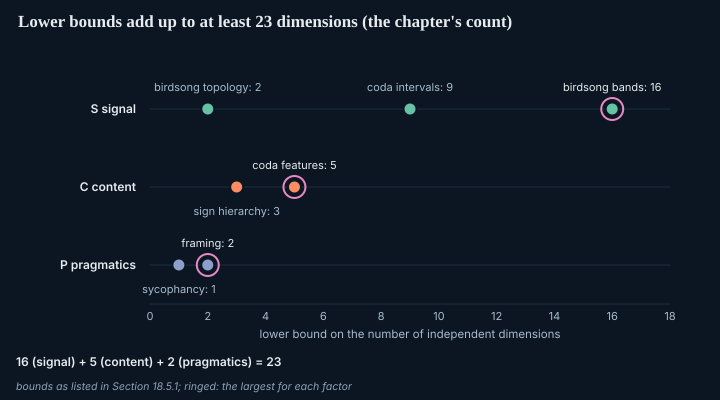

Chapter 18: Open Questions
Part VII: Synthesis and Horizons
“The most exciting phrase to hear in science, the one that heralds new discoveries, is not ‘Eureka!’ but ‘That’s funny…’” — attributed to Isaac Asimov
A book that presents a framework should be honest about the framework’s limits. This final chapter catalogues the open questions — the places where the geometric theory of communication reaches the edge of what we know, points toward what we do not know, and acknowledges the difference. Some of these questions may be answerable with current tools and near-term data. Others may require new mathematics. A few may be unanswerable in principle, and saying so is part of the honesty.
18.1 Can We Decode Whale Communication?
18.1.1 What We Have
The geometric analysis of Chapters 5–7 established that sperm whale codas have rich structure:
- A combinatorial phonetic system with at least four independently varying features (Sharma et al., 2024) and a fifth spectral dimension (Begus et al., 2024, 2025).
- Hierarchical organisation that embeds naturally in hyperbolic space (Chapter 7, Finding I).
- Topological signatures that distinguish rhythm classes and are invariant to recording conditions (Chapter 7, Finding II).
- Linguistic universals shared with human language: Menzerath’s law ($r = -0.269$, $p < 10^{-144}$), Markov sequential structure ($I = 0.380$ bits), active turn-taking with systematic latency asymmetry (Chapter 7, Finding IV).
- A dual encoding scheme that separates content (topology) from identity (metric) into orthogonal geometric factors (Chapter 7, Finding V).
This is more structure than any previous analysis of a non-human communication system has revealed. It is also, emphatically, not enough to decode the system.
18.1.2 What We Lack
The gap between structure and meaning is precise. We have Levels 1 and 2 of the hierarchy established in Chapter 16 — signal geometry and hierarchical geometry — but not Level 3, semantic geometry. Level 3 requires parallel data: the same meaning expressed in two coordinate systems. We have no such data for whale communication.
The specific missing elements are:
Referential grounding. We cannot point to a specific coda type and say with confidence what it refers to. The identity function of 1+1+3 is the strongest candidate for referential grounding (Gero et al., 2016), but even this is contested: 1+1+3 may function as a group identity marker rather than a referential sign. The distinction matters geometrically. A referential sign maps a point on the signal manifold to a point on the content manifold. A group identity marker maps a point on the signal manifold to a region of the social-identity manifold. The two functions live on different manifold factors, and decoding requires knowing which factor is being addressed.
Compositional semantics. Even if we could ground individual coda types, we would need a compositional rule for sequences. Do whale codas compose? If a whale produces 5R3 followed by 1+1+3, is the meaning a function of the individual coda meanings and their order? Or is the sequence itself an atomic unit with an undecomposable meaning? The Markov structure (Chapter 7, Finding IV) suggests that sequential context matters — the next coda depends on the previous one — but dependence is not compositionality. Human speech has both Markov dependence (phonotactic constraints) and compositionality (sentence meaning from word meanings). Whale codas have the former. Whether they have the latter is unknown.
Behavioural correlation. The most promising route to semantic access is correlation between coda production and observable behaviour: specific coda types produced during specific activities (foraging, socialising, nursing, predator avoidance), in specific social configurations (dyadic, group, inter-clan), with specific outcomes (approach, avoidance, synchronisation). The DSWP dataset includes some behavioural metadata, but the coverage is sparse and the causal direction is ambiguous: does the coda cause the behaviour, reflect the behaviour, or co-occur with it for reasons unrelated to either?
18.1.3 What Would Be Needed
A realistic path to partial decoding would require:
-
Dense behavioural annotation. Every coda in a substantial corpus tagged with concurrent behaviour (activity type, social configuration, distance to conspecifics, diving phase). This is technically demanding — it requires simultaneous acoustic recording and visual or tag-based behavioural observation — but feasible with current technology. The DSWP has the infrastructure; the missing element is systematic co-registration of acoustic and behavioural data at the individual coda level.
-
Playback experiments. Controlled playback of specific coda types to specific individuals and measurement of the behavioural response. If 5R3 elicits approach and 4i1 elicits avoidance, we have one bit of semantic information per coda type. The ethical constraints are significant — playback experiments with cetaceans require careful consideration of disturbance — but they have been conducted successfully with other species (King and Janik, 2013).
-
Cross-population comparison. If different sperm whale populations (e.g., Caribbean and Pacific) use the same coda types with different frequencies or in different contexts, the variation provides evidence about which aspects of coda meaning are universal (and therefore likely grounded in shared biology or ecology) and which are cultural (and therefore learned).
-
Geometric prediction and testing. The Rosetta trajectory’s logic suggests a specific strategy: use the hierarchical geometry to predict semantic relationships (types close in the Poincaré embedding should have related meanings), then test the predictions against behavioural data. If 5R1, 5R2, and 5R3 are hierarchically close, and 5R1 is grounded behaviourally as an identity coda, then the prediction is that 5R2 and 5R3 also have identity-related functions. The prediction is falsifiable.
18.1.4 An Honest Assessment
Will we decode whale communication in the next decade? I do not know. The geometric tools provide a foundation: they tell us what kind of system we are dealing with (hierarchical, combinatorial, topologically structured, dually encoded). They do not, and cannot, provide the semantic content. That requires data we do not yet have.
The risk is that the phrase “whale language” creates expectations that the science cannot yet meet. The whales have a communication system of remarkable geometric complexity. Whether it constitutes a “language” in the technical sense — with referential semantics, compositionality, and recursive structure — is a separate question that the geometric analysis does not answer.
What the geometric analysis does is make the question precise. It is no longer “do whales communicate?” (yes, trivially). It is: “does the hierarchical, combinatorial, topologically structured, dually encoded system revealed by geometric analysis support compositional semantics?” That is a testable question. The tests have not yet been run.
18.2 Is Semantic Space Riemannian?
18.2.1 The Assumption
This book assumes that the communication manifold $M = S \times P \times C$ is a Riemannian manifold: a smooth manifold equipped with a positive-definite metric tensor $g$ at each point. This assumption underwrites the entire mathematical apparatus: geodesics, parallel transport, curvature, holonomy, the Ambrose-Singer theorem, the holonomy-curvature-area bound. Without the Riemannian structure, these concepts are either undefined or require substantial reformulation.
The assumption is reasonable for the signal manifold $S$. Acoustic signals live in a function space that can be metrised by standard distances ($L^2$, spectral, etc.), and the SPD manifold SPD$(n)$ with the log-Euclidean metric is a well-studied Riemannian manifold with known geodesics and curvature.
But is the assumption reasonable for the content manifold $C$ — the space of meanings?
18.2.2 Three Challenges
Ambiguity and the degenerate metric. A word with multiple meanings occupies multiple points on $C$ — or, equivalently, a single point where the metric degenerates. Consider “bank” (financial institution) and “bank” (river edge). If these two meanings occupy distinct points on $C$, connected by a path through the manifold, then the metric between them should be large (the meanings are distant). But the signal distance between “bank” and “bank” is zero (identical strings). The metric on $M$ must accommodate a zero-distance path on $S$ connecting large-distance points on $C$. This is possible in a product manifold (the $S$ component has zero distance while the $C$ component has large distance), but it creates technical difficulties: the projection from $M$ to $S$ is not a Riemannian submersion, and the horizontal lift is ill-defined at ambiguous points.
More seriously, some ambiguity is not discrete but continuous: a word’s meaning may shade gradually from one sense to another depending on context (“I went to the bank” — financial or river? — may admit a continuum of intermediate interpretations in certain contexts). At such points, the metric on $C$ may not be positive-definite. It may be degenerate: the tangent space at the point of ambiguity has a null direction along which distance is zero. A degenerate metric requires semi-Riemannian rather than Riemannian geometry — the geometry of spacetime, where the metric has signature $(+, +, +, -)$, rather than the geometry of space, where the metric is positive-definite.
Vagueness and the non-Hausdorff topology. Vague concepts — “tall,” “heap,” “bald” — have no sharp boundaries. There is no precise height at which a person becomes tall. The standard sorites paradox (removing one grain from a heap still leaves a heap, yet removing grains one by one eventually leaves no heap) is a topological statement: the concept “heap” does not have a closed boundary in the space of grain collections. If the content manifold $C$ has a Hausdorff topology (any two distinct points can be separated by disjoint open sets), then every concept has a sharp boundary. Vague concepts violate this: the boundary between “tall” and “not tall” is a region, not a surface. A faithful manifold model of vague concepts may require a non-Hausdorff topology, which is exotic in differential geometry but studied in algebraic geometry (the Zariski topology) and in certain approaches to quantum gravity (non-commutative geometry).
Asymmetric distance and Finsler structure. In human communication, understanding is often asymmetric. Understanding A’s perspective from B’s point of view is not the same difficulty as understanding B’s perspective from A’s. A child can more easily understand an adult’s simplified speech than an adult can understand a child’s idiosyncratic language. A specialist can more easily follow a generalist’s summary than a generalist can follow a specialist’s technical argument.
If semantic distance is asymmetric — $d(A, B) \neq d(B, A)$ — then the metric is not Riemannian. Riemannian metrics are symmetric by definition: $g(X, Y) = g(Y, X)$. An asymmetric distance requires Finsler geometry, where the metric depends on direction: $F(x, v) \neq F(x, -v)$ in general. Finsler manifolds have geodesics, curvature, and parallel transport, but the theory is substantially more complex and less well-developed than Riemannian geometry.
18.2.3 The State of the Question
The Riemannian assumption is a useful approximation that enables the rich mathematical apparatus of this book. The three challenges above identify where the approximation may break down:
- At points of ambiguity (degenerate metric)
- In regions of vagueness (non-Hausdorff topology)
- For asymmetric understanding (Finsler structure)
Whether these breakdowns are serious enough to require a change of formalism is an empirical question. The BIP experiments (Chapter 11) operate in a domain (moral reasoning) where ambiguity, vagueness, and asymmetry are all present, and the Riemannian framework produces meaningful results (44.5% F1, 87.6% correlative consistency). This suggests that the Riemannian approximation is adequate for the invariant core of meaning, even if it fails at the periphery where ambiguity, vagueness, and asymmetry dominate.
A research programme that takes these challenges seriously would:
- Develop semi-Riemannian semantic geometry for ambiguous regions of $C$, allowing the metric to degenerate along ambiguity directions.
- Investigate non-Hausdorff manifold models for vague concepts, drawing on sheaf-theoretic approaches to vagueness (Lawvere, 1986; Vickers, 1989).
- Explore Finsler geometry for communication, testing whether empirical asymmetries in comprehension (measured, e.g., by reaction time or error rate in direction-dependent translation tasks) are consistent with a Finslerian metric on $C$.
None of these programmes has been undertaken. The open question stands: is semantic space Riemannian? The honest answer is: approximately, in the regions we have tested, for the structures we have measured. Whether the approximation holds globally remains unknown.
18.3 What Is the Conservation Law for Meaning?
18.3.1 The Noether Temptation
If the communication Lagrangian is invariant under the gauge group $G = T \times R \times F$ (translation, re-description, format change), then Noether’s theorem implies a conserved quantity associated with each continuous symmetry. In physics, the conserved quantities are energy (time translation invariance), momentum (spatial translation invariance), angular momentum (rotational invariance), and charge (gauge invariance). What is the conserved quantity of communication?
The temptation is to answer: information. The invariant content of a communicative act — the meaning that survives all gauge transformations — is the conserved quantity. Translation preserves meaning (or should). Paraphrase preserves meaning (or should). Format change preserves meaning (or should). The conserved quantity is the proposition — the abstract content that all surface forms share.
18.3.2 Why the Temptation Fails
The answer is circular. We defined the gauge group as the set of transformations that preserve meaning. If we then invoke Noether’s theorem to conclude that meaning is conserved under the gauge group, we have said nothing: we have used the definition as a theorem.
For Noether’s theorem to produce a non-trivial conservation law, we need:
-
A Lagrangian. A functional $\mathcal{L}[\phi, \partial\phi]$ on the fields $\phi$ of the communication system, whose stationary points are the “equations of motion” of communication. What are the fields? What is the Lagrangian?
-
A continuous symmetry. The gauge group must be continuous (Lie group) for the standard Noether theorem to apply. But the gauge group posited for normative communication (Definition 13.9) has a discrete factor ($V_4$). Discrete symmetries produce topological conservation laws (e.g., conservation of parity in quantum mechanics), not the differential conservation laws (continuity equations) that Noether’s theorem yields.
-
An independent definition of the conserved quantity. We need to know what the conserved quantity is before invoking the theorem, or at least we need the theorem to predict a quantity that can be independently verified. “Meaning” is not independently defined; it is the very thing we are trying to formalise.
18.3.3 Possible Paths Forward
Despite the circularity, the question is not empty. Three approaches might yield non-trivial conservation laws:
Path 1: Information-theoretic conservation. Define the “meaning content” of a communicative act as its mutual information with the content manifold $C$:
$$I(\text{act}; C) = H(C) - H(C \mid \text{act})$$
where $H$ is the Shannon entropy. The conservation law would then be: gauge transformations (translation, paraphrase, re-description) preserve $I(\text{act}; C)$. This is testable — one can measure the mutual information between a text and a set of semantic labels before and after translation — and it is non-trivial, because most real translations do not preserve mutual information exactly. The degree of violation measures the holonomy. But the approach requires a finite labeling of $C$ (to compute the entropy), which reintroduces the scalar irrecoverability problem.
Path 2: Topological conservation. Instead of a differential conservation law, seek a topological invariant. The persistent homology of a text’s embedding in semantic space (the persistence diagram of the point cloud of sentence embeddings) might be invariant under translation. If the $H_0$ and $H_1$ features of the persistence diagram are preserved by gauge transformations, then the topological structure of the text’s meaning — its connected components and loops in semantic space — is the conserved quantity. This is testable using existing TDA tools and multilingual corpora.
Path 3: Categorical conservation. Abandon the differential/topological dichotomy and work in category theory, where “conservation” means functoriality: a translation functor $T: \textbf{Lang}_1 \to \textbf{Lang}_2$ that preserves the morphisms (semantic relations) of the source language category. The conserved quantity is the categorical structure — the pattern of relations among meanings — rather than any particular meaning. This approach has been developed in computational linguistics by Coecke, Sadrzadeh, and Clark (2010) using compact closed categories, and it connects naturally to the gauge-theoretic framework (a gauge transformation is a natural isomorphism between functors).
18.3.4 The Honest Answer
We do not yet know the conservation law for meaning. The question is well-posed (given the gauge invariance framework, a conservation law should exist). The candidate answers (information-theoretic, topological, categorical) are each partially satisfactory and each incomplete. The resolution may require a formalism that does not yet exist — a discrete Noether theorem for cognitive gauge groups that produces topological rather than differential conservation laws.
This is the deepest open question in the geometric theory of communication. It is also the question whose answer would have the most far-reaching consequences. A conservation law for meaning would be to communication science what conservation of energy is to physics: the foundational constraint that all theories must satisfy and all measurements must respect.
18.4 Can Persistent Homology Detect Meaning in Unknown Systems?
18.4.1 The Promise
The TDA pipeline developed in Chapter 6 extracts topological invariants from any signal: signal $\to$ time-delay embedding $\to$ point cloud $\to$ persistent homology $\to$ feature vector. The pipeline is domain-independent. It requires no semantic knowledge, no labelled data, no parallel texts. It sees shape, not meaning.
This domain independence suggests an extraordinary possibility: could the TDA pipeline detect meaningful structure in a truly unknown communication system? Not whale codas (where we have extensive metadata and taxonomic annotation) or birdsong (where we have species labels) but genuinely unknown signals — SETI data, undeciphered scripts, or encrypted communications?
18.4.2 SETI: The Ultimate Unknown
The Search for Extra-Terrestrial Intelligence (SETI) faces the most extreme version of the decoding problem. If a signal is detected, we will have:
- The raw signal (the signal manifold $S$)
- No taxonomy (no hierarchical geometry)
- No parallel texts (no semantic geometry)
- No behavioural context (no pragmatic geometry)
- No knowledge of the encoding scheme, the communication medium’s conventions, or even whether the signal is intentional communication rather than a natural phenomenon
The TDA pipeline can operate in this setting. It requires only the raw signal. The question is whether the topological invariants it extracts can distinguish “this signal has communicative structure” from “this signal is noise” or “this signal is a natural phenomenon (pulsar, quasar, atmospheric interference).”
The theoretical basis is the following argument. Communication signals, because they must encode information reliably in a noisy channel, have specific topological properties:
- Low entropy relative to bandwidth. A communication signal uses a subset of the available signal space (the codebook), and the codebook has lower topological complexity than the full signal space. This manifests as lower $H_0$ persistence (fewer connected components at large scales) and specific $H_1$ structure (loops corresponding to periodic or quasi-periodic elements of the code).
- Scale-separated structure. Communication typically operates at multiple scales (phonemes, words, sentences, paragraphs; or clicks, codas, exchanges, conversations). Each scale introduces topological features at a characteristic persistence: short-lived features for fine-scale structure, long-lived features for large-scale structure. Random noise has scale-free persistence; communication has scale-structured persistence.
- Temporal non-stationarity with recurrence. Communication signals are non-stationary (the content changes over time) but recurrent (the same elements are reused). This produces a specific topological signature: the persistence diagram evolves over time, but the distribution of persistence features is stable. Noise is stationary (constant persistence distribution). Natural phenomena are non-stationary but non-recurrent (persistence distribution drifts).
18.4.3 Undeciphered Scripts
A less exotic but equally important application is the detection of linguistic structure in undeciphered scripts. The Indus Valley script, Linear A, Proto-Elamite, and the Rongorongo script of Easter Island are all undeciphered writing systems with surviving corpora. The question of whether these systems encode language (as opposed to accounting, ritual notation, or decorative patterns) has been debated for decades.
The TDA pipeline, applied to the sequence of sign occurrences in a corpus, could extract topological features of the sign system’s structure:
- $H_0$ persistence of the sign co-occurrence graph would measure the number of distinct “communities” of signs that frequently co-occur — analogous to parts of speech or semantic fields.
- $H_1$ persistence would detect cyclic structures in sign co-occurrence — analogous to the closed loops of syntactic dependencies.
- Comparison with known systems. The persistence diagrams of undeciphered scripts could be compared with those of known writing systems (cuneiform, Egyptian hieroglyphs, Chinese, alphabetic scripts) and with those of non-linguistic sign systems (accounting tokens, decorative patterns, random sequences). If an undeciphered script’s topological profile falls within the distribution of known linguistic systems and outside the distribution of non-linguistic systems, the evidence favours the linguistic hypothesis.
Rao et al. (2009) used conditional entropy to argue that the Indus Valley script is linguistic, but the argument has been contested (Sproat, 2010; Farmer et al., 2004). The TDA approach would provide independent, geometrically grounded evidence based on topological rather than statistical features.
18.4.4 The Gap Between Structure and Communication
The limitation is the gap between “has topological structure” and “the structure is communicative.” Many natural phenomena have rich topological structure: the attractors of turbulent fluid flow, the spectral signatures of astronomical objects, the branching patterns of river networks. Rich topology is necessary for communication but not sufficient. The additional criterion is functional — the structure must serve the purpose of information transmission — and no purely structural analysis can establish functionality without external evidence (behavioural, contextual, or parallel).
The TDA pipeline can narrow the hypothesis space. It can say: “this signal has topological features consistent with communication systems and inconsistent with known natural phenomena.” It cannot say: “this signal is communication.” The gap is the same gap that separates Level 1 (signal geometry) from Level 3 (semantic geometry) in the hierarchy of Chapter 16, and the tools for closing it are the same: parallel data, behavioural correlation, and compositional analysis.
18.5 What Is the Dimensionality of the Communication Manifold?
18.5.1 Lower Bounds from This Book
Every empirical analysis in this book provides a lower bound on the dimensionality of some factor of the communication manifold $M = S \times P \times C$:
| Factor | Analysis | Independent dimensions identified | Lower bound |
|---|---|---|---|
| $S$ (signal) | Whale coda ICI | 9 (inter-click intervals) | 9 |
| $S$ (signal) | Birdsong SPD | 136 (upper triangle of SPD(16)) | 16 (independent spectral bands) |
| $S$ (signal) | Birdsong TDA | 16 (8 per homology dimension) | 2 (topological dimensions) |
| $C$ (content) | Whale coda taxonomy | 5 (click count, rhythm, tempo, rubato, ornamentation) | 5 |
| $C$ (content) | Hohfeldian relations | 4 (Right, Duty, Liberty, No-Right) | 4 |
| $C$ (content) | Cuneiform sign hierarchy | 3 (sign, reading, word) | 3 |
| $P$ (pragmatic) | Framing effects | 2 (dramatic/euphemistic axis, magnitude) | 2 |
| $P$ (pragmatic) | Sycophancy | 1 (agreement gradient) | 1 |
These are lower bounds, not estimates. The actual dimensionality is at least as large as the largest lower bound for each factor, and likely much larger. The signal manifold $S$ has at least 16 independent dimensions (from the birdsong analysis). The content manifold $C$ has at least 5 independent dimensions (from the whale coda taxonomy). The pragmatic manifold $P$ has at least 2 independent dimensions (from the framing analysis). The total lower bound on $\dim(M)$ is at least 23.

Figure 18.1. The lower bounds of Section 18.5.1 on the dimension of each factor of the communication manifold, one mark per analysis. The chapter takes the largest bound on each factor (ringed) and adds them: 16 for the signal, 5 for the content and 2 for the pragmatics, a total of at least 23. These are counts of features the book’s analyses used, posited as independent, and not estimates of the true dimension. The table’s row for the Hohfeldian relations is left out because the book counts it in two ways; it does not change the total.
18.5.2 Why the True Dimension Matters
The dimensionality of $M$ determines the severity of scalar irrecoverability (Chapter 15, Theorem 15.2, part 1): a scalar metric on an $n$-dimensional manifold has fibres of dimension $n - 1$, so the amount of information destroyed grows linearly with $n$. If $\dim(M) = 23$, a BLEU score destroys at least 22 dimensions of information. If $\dim(M) = 100$ (a plausible estimate for the full communication manifold of human language), a BLEU score destroys at least 99 dimensions.
The dimensionality also determines the computational cost of geometric evaluation. Computing distances on a Riemannian manifold requires $O(n^2)$ operations per point (for the metric tensor), computing persistent homology requires $O(N^3)$ operations (for a point cloud of $N$ points in $n$ dimensions, with $N$ growing exponentially with $n$ for fixed resolution), and computing holonomy requires integration along paths on the manifold. High dimensionality makes all of these operations more expensive.
18.5.3 Estimation Strategies
How might we estimate the true dimensionality? Several approaches are available:
Intrinsic dimension estimation. Methods like the maximum likelihood estimator of Levina and Bickel (2004), the correlation dimension (Grassberger and Procaccia, 1983), or the persistent homology dimension (Schweinhart, 2020) can estimate the intrinsic dimension of a point cloud in a high-dimensional ambient space. Applied to word embeddings, sentence embeddings, or communication feature vectors, these methods would estimate the number of independent dimensions along which communicative acts vary.
Existing results are suggestive. Cai et al. (2024) estimated the intrinsic dimension of various language model representation spaces and found values ranging from $\sim$10 to $\sim$100, depending on the layer, the model size, and the corpus. These estimates apply to the representation manifold of the model, which is a proxy for (but not identical to) the communication manifold $M$.
Factor analysis. The product structure $M = S \times P \times C$ predicts that the dimensionality of $M$ is the sum of the dimensionalities of its factors. If each factor can be independently estimated — for example, by analysing corpora where one factor varies while the others are controlled — then the total dimensionality can be computed additively.
Topological estimation. The Betti numbers of the communication manifold provide topological constraints on its dimension: $\beta_k(M) = 0$ for $k > \dim(M)$, and the Poincaré polynomial $\sum_k \beta_k t^k$ encodes the manifold’s topological type. If persistent homology can estimate the Betti numbers of $M$ from a sufficiently large sample of communicative acts, then the topological constraints can provide an upper bound on the dimension.
18.5.4 Is There a Universal Bound?
A more ambitious question: is there a universal bound on the dimensionality of the communication manifold, independent of the particular communication system?
The evidence is mixed. Whale codas have 5 independently varying features. Human moral reasoning has 4 independent dimensions (the Hohfeldian quartet). Birdsong species identity can be captured by 156 features, but the intrinsic dimensionality is likely much lower (many of the 156 features are correlated). Human language, with its vast expressive capacity, might require hundreds of independent semantic dimensions.
If there is a universal bound, it likely depends on the information-theoretic capacity of the communication channel. A channel with bandwidth $B$ and noise floor $N$ can transmit at most $C = B \log_2(1 + S/N)$ bits per second (Shannon, 1948). The effective dimensionality of the communication manifold is bounded by the number of independent features that can be encoded within this capacity, which is $\sim C / r$, where $r$ is the minimum bits per feature for reliable transmission. For human speech ($C \approx 40$ bits/s, $r \approx 1$ bit/feature), this gives an upper bound of $\sim 40$ independent features per second of speech — a plausible estimate for the dimensionality of the instantaneous communication manifold.
But this argument assumes that the communication manifold is the space of instantaneous states. If it is the space of extended communicative acts (sentences, paragraphs, conversations), then the dimensionality grows with the duration of the act, and there is no finite universal bound.
The question remains open. Its resolution would connect the geometric theory of communication to information theory at a fundamental level.
18.6 Additional Open Questions
18.6.1 What Is the Curvature Distribution of Semantic Space?
Chapter 10 established that the content manifold $C$ has variable curvature: flat in the commercial-transaction region (formulaic language translates cleanly), curved in the personal-emotion region (poetry and personal letters resist translation). But the curvature was characterised qualitatively, not measured quantitatively.
A quantitative curvature map of semantic space would answer questions of practical importance. Which domains of human knowledge have flat semantic regions (and therefore translate easily between languages, domains, and formalisms)? Which have high curvature (and therefore resist translation)? Is the curvature distribution universal across languages, or does it depend on the particular pair of languages being compared?
The measurement strategy would be:
- For a large multilingual corpus with high-quality parallel translations, compute the holonomy of translation loops (translate $A \to B \to C \to A$ and measure the displacement).
- By the holonomy-curvature-area theorem (Theorem 10.1), the holonomy of small loops is proportional to the enclosed curvature. By varying the “size” of the loop (the semantic distance between the source and target concepts), the curvature can be estimated as a function of position on $C$.
- Aggregate the curvature estimates into a map: which regions of $C$ are flat, which are gently curved, which are highly curved?
This programme is computationally feasible with current multilingual models and large-scale parallel corpora (e.g., OPUS, EuroParl, the UN Parallel Corpus). It has not been undertaken.
18.6.2 Can the Geometric Framework Improve Machine Translation?
The parallel transport interpretation of translation (Chapter 10) suggests a specific engineering programme: build a translation system that explicitly minimises holonomy rather than maximising BLEU.
The system would:
- Embed source and target languages as coordinate charts on a shared content manifold $C$.
- Compute the translation path as the geodesic from the source point to the nearest point in the target chart’s domain.
- Execute parallel transport along the geodesic, producing a target-language vector that preserves as much of the source meaning’s structure as the curvature permits.
- Evaluate translation quality by the holonomy of the round-trip loop ($\text{source} \to \text{target} \to \text{source}$), rather than by $n$-gram overlap with a reference.
Each step is theoretically motivated by the framework of this book. None has been implemented. The closest existing work is the cross-lingual alignment of multilingual models (Conneau et al., 2020), which implicitly constructs a shared embedding space — a discrete approximation to the content manifold $C$ — but does not explicitly compute geodesics, curvature, or holonomy.
18.6.3 What Is the Geometry of Pragmatic Inference?
This book has focused primarily on the content manifold $C$ (Chapters 9–13) and the signal manifold $S$ (Chapters 7–8). The pragmatic manifold $P$ — the space of speaker intentions, social contexts, and communicative functions — has received comparatively less attention. Chapter 14 touched on pragmatic effects (framing, sycophancy), but a full geometric analysis of pragmatics remains undeveloped.
The pragmatic manifold $P$ is likely the most geometrically complex factor of $M$. It encodes:
- Speech act type: assertion, question, command, promise, apology, greeting, etc. These are discrete categories (consistent with the discrete $V_4$ factor of Definition 13.9).
- Implicature: what is implied but not said. Gricean maxims (quantity, quality, relation, manner) are constraints on the pragmatic manifold that restrict the space of admissible interpretations.
- Social context: power relations, solidarity, face-saving, politeness. Brown and Levinson’s (1987) politeness theory describes a two-dimensional pragmatic space (power, distance) that determines the choice of politeness strategy.
- Common ground: shared knowledge between speaker and hearer. Clark’s (1996) theory of common ground describes an evolving state that constrains interpretation.
A geometric theory of pragmatics would model each of these as geometric structure on $P$: speech act types as discrete regions (phases), implicature as constraints on the metric (admissibility conditions on geodesics), social context as coordinates, and common ground as a dynamical system on $P$ that evolves over the course of a conversation.
18.6.4 Is There a Variational Principle for Communication?
Physics is built on variational principles: systems evolve to extremise an action functional. Does communication have a variational principle? Is there a functional $\mathcal{S}[\gamma]$ on communication paths $\gamma$ (the sequence of communicative acts in a conversation) such that actual conversations are stationary points of $\mathcal{S}$?
Candidates for the action functional include:
- Minimum holonomy: conversations proceed along paths that minimise meaning distortion ($\mathcal{S} = \int \|R\| \, ds$).
- Minimum effort: conversations proceed along paths that minimise cognitive and articulatory cost ($\mathcal{S} = \int \|\dot{\gamma}\|^2 \, dt$, the kinetic energy of the communication trajectory).
- Maximum relevance: conversations proceed along paths that maximise the relevance of each utterance, in the sense of Sperber and Wilson’s (1986) relevance theory ($\mathcal{S} = -\int \text{Relevance}(\gamma(t)) \, dt$, with the minus sign because we extremise).
The Zipfian distribution of word frequencies — observed universally in human language and echoed in whale coda frequencies and birdsong syllable frequencies — is evidence for a variational principle, because Zipf’s law can be derived from the minimisation of a combined speaker-hearer effort functional (Ferrer-i-Cancho and Sole, 2003). But deriving Zipf’s law from a variational principle is not the same as having a variational principle for communication as a whole. The open question is whether a single action functional governs the full dynamics of communicative exchange.
18.7 The Shape of the Frontier
18.7.1 What We Know
The geometric theory of communication, as developed in this book, claims the following:
- Communication has manifold structure ($M = S \times P \times C$) with metric, connection, and curvature.
- Scalar evaluation destroys this structure irreversibly, with severity proportional to the manifold’s dimensionality and the fibre’s topological complexity.
- Three complementary geometries (hyperbolic, Riemannian, topological) capture the hierarchical, covariance, and shape structure of communication, respectively.
- These geometries produce informative results across three animal lineages (cetacean, avian, human) and across 4,000 years of human history (cuneiform to modern English).
- The deepest communicative structure — the gauge-invariant core of meaning — is measurable, discrete ($V_4$), and preserved across languages and centuries.
18.7.2 What We Do Not Know
- Whether the content manifold $C$ is Riemannian, semi-Riemannian, Finslerian, or something more exotic.
- What the conservation law for meaning is, if one exists.
- Whether persistent homology can reliably distinguish communication from non-communication in unknown signals.
- What the true dimensionality of $M$ is, and whether it has a universal bound.
- What the quantitative curvature distribution of semantic space looks like.
- Whether the geometric framework can improve machine translation in practice.
- What the geometry of pragmatic inference is.
- Whether communication obeys a variational principle.
- Whether whale communication has compositional semantics.
18.7.3 The Asymmetry
There is an asymmetry between these two lists. The “what we know” list consists of empirical claims — measurements, tools, and predictions checked against the data in hand. The “what we do not know” list consists of theoretical questions — conjectures, programmes, open problems. The asymmetry is deliberate. This book was written to establish empirical foundations, not to spin theoretical webs. The geometric framework earns its keep not by its elegance (though it is elegant) but by its empirical productivity: it finds structure that scalar methods miss, across domains that have nothing in common except the geometric analysis.
The open questions listed above are not problems to be solved by more mathematics. They are problems to be solved by more data, more experiments, and more engagement between the geometric framework and the empirical sciences of communication — linguistics, bioacoustics, philology, cognitive science. The mathematics is a tool. The science is the destination.
18.7.4 A Final Image
In the 1820s, Jean-François Champollion sat with the Rosetta Stone and its three scripts — hieroglyphic, demotic, and Greek — and asked: is there structure here that connects these three? The answer was yes, and the structure was the common content that all three scripts expressed. The scripts were different coordinate charts on the same content manifold, and Champollion’s genius was to recognise the gauge invariance.
Two centuries later, we sit with a different set of scripts — whale clicks, birdsong, cuneiform, modern language — and ask the same question. The geometric tools of this book have confirmed that the structure exists: hierarchical, topological, covariance-rich, and gauge-invariant at its core. What remains is to read it.
The reading has begun. The trajectory continues.
Series cross-references. Scalar Irrecoverability Theorem: GR Ch. 13; this volume Ch. 15. Gauge invariance and Noether’s theorem: GR Ch. 8. Hyperbolic embeddings and distortion: GM Ch. 3; this volume Ch. 5. Persistent homology and stability: GM Ch. 5; this volume Ch. 6. Parallel transport and holonomy: this volume Ch. 10. The $V_4$ group (earlier drafts: $D_4$, withdrawn): GE Ch. 8; this volume Ch. 13. The Rosetta trajectory: this volume Ch. 1, 16.
GR = Geometric Reasoning. GE = Geometric Ethics. GM = Geometric Methods.